Recall from Section 2.2.1 that a piecewise
 curve
curve  on
on  is
is
 everywhere except possibly at a finite number of points where it is
continuous but its derivative
everywhere except possibly at a finite number of points where it is
continuous but its derivative  is discontinuous. Such points
of discontinuity of
is discontinuous. Such points
of discontinuity of  are known
as corner points. A corner point
are known
as corner points. A corner point
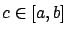
is characterized by the property that the left-hand derivative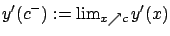
and the right-hand derivative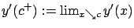
both exist but have different values. For example, if a hanging chain (catenary) is suspended too close to the ground, then it will not look as in Figure 2.3 on page![[*]](crossref.gif) but will instead touch the ground and have
two corner points; see Figure 3.1. Below is another example
in which a corner point arises.
but will instead touch the ground and have
two corner points; see Figure 3.1. Below is another example
in which a corner point arises.
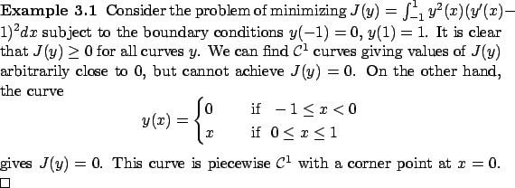
Suppose that a piecewise
 curve
curve  is a strong extremum
for the Basic Calculus of Variations Problem, under the same assumptions as in Section 2.3.
Clearly,
is a strong extremum
for the Basic Calculus of Variations Problem, under the same assumptions as in Section 2.3.
Clearly,  is then also a weak extremum, with respect to the generalized
1-norm
is then also a weak extremum, with respect to the generalized
1-norm
For simplicity, we
assume that  has only one (unspecified) corner point
. As a generalization of (2.10), we will let two separate perturbations
has only one (unspecified) corner point
. As a generalization of (2.10), we will let two separate perturbations
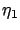
and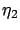
act on the two portions of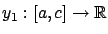
and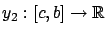
; their perturbed versions will then be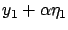
and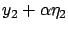
. Clearly, we must have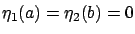
to preserve the endpoints. Furthermore, since the location of the corner point is not fixed, we should allow the corner point of the perturbed curve to deviate from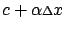
for some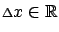
, with the same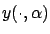
, with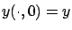
. There will be an additional condition on and to guarantee that is continuous for each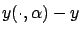
is piecewise
The reader might have noticed a small problem which we need to fix before proceeding. The domain of  is
is
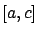
, whereas we want the domain of to be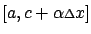
. For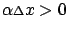
, such a perturbed curve is ill defined. To deal with this issue, let us agree to extend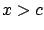
by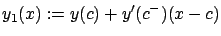
. The linearity is actually not crucial, all we need is that the function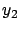
, extending it linearly to the left ofLet us write the functional to be minimized as a sum of two components:
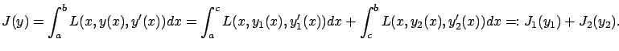
After the perturbation, the first functional becomes
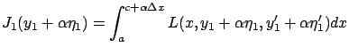
(note that should also be an argument on the left-hand side, but we omit it for simplicity). We can now compute the corresponding first variation:
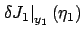 |
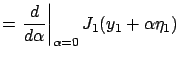 |
|
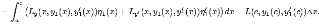 |
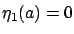
, we can bring the above expression to the form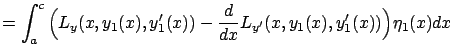 |
||
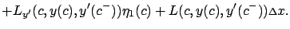 |
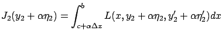
and the first variation of
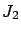
at is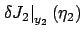 |
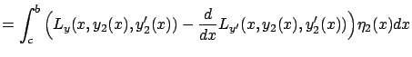 |
|
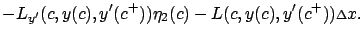 |
For  close to 0, the perturbed curve
is close to the original curve
close to 0, the perturbed curve
is close to the original curve  in the sense of the 0-norm.
Therefore, the function
in the sense of the 0-norm.
Therefore, the function
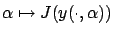
must attain a minimum at
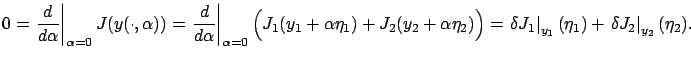
Next, observe that each of the two portions
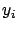
,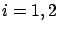
of the optimal curve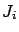
. Indeed, this becomes clear if we consider the special case when the perturbation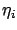
vanishes at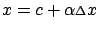
. This provides the additional relation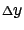
describes the first-order (in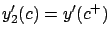
, we obtain
The above reasoning can be extended to multiple corner points,
yielding the necessary conditions for optimality known as the
Weierstrass-Erdmann corner conditions: If a
curve  is a strong extremum, then
is a strong extremum, then
 and
must be continuous at each corner point
of
and
must be continuous at each corner point
of  .
More precisely, their discontinuities (due to the fact that
.
More precisely, their discontinuities (due to the fact that  does not exist at corner points) must be removable.
The quantities
does not exist at corner points) must be removable.
The quantities  and
are of course familiar to us from Chapter 2;
they are, respectively, the momentum and the Hamiltonian.
Weierstrass presented these conditions in 1865
during his lectures on calculus of
variations, but never formally published them.
They were independently derived and published by Erdmann in
1877.
and
are of course familiar to us from Chapter 2;
they are, respectively, the momentum and the Hamiltonian.
Weierstrass presented these conditions in 1865
during his lectures on calculus of
variations, but never formally published them.
They were independently derived and published by Erdmann in
1877.
For the case of a single corner point,
the two Weierstrass-Erdmann corner conditions
together with the two boundary
conditions provide four relations, which is
the correct number to uniquely specify two portions
of the extremal (each satisfying the second-order Euler-Lagrange differential equation).
In general, to uniquely specify an extremal
consisting
of  portions (i.e., having
corner points) we need
conditions,
and these are provided by
corner conditions plus the
two boundary conditions.
portions (i.e., having
corner points) we need
conditions,
and these are provided by
corner conditions plus the
two boundary conditions.